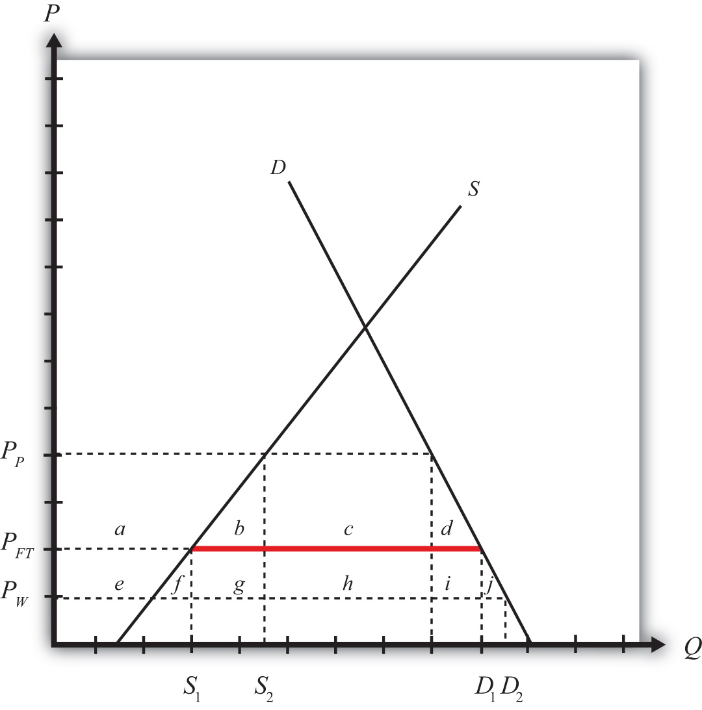

Perhaps surprisingly, “large” importing countries and “large” exporting countries have a market imperfection present. This imperfection is more easily understood if we use the synonymous terms for “largeness”: monopsony power and monopoly power. Large importing countries are said to have “monopsony power in trade,” while large exporting countries are said to have “monopoly power in trade.” As this terminology suggests, the problem here is that the international market is not perfectly competitive. For complete perfect competition to prevail internationally, we would have to assume that all countries are “small” countries.
Let’s first consider monopoly power. When a large exporting country implements a trade policy, it will affect the world market price for the good. That is the fundamental implication of largeness. For example, if a country imposes an export tax, the world market price will rise because the exporter will supply less. It was shown in Chapter 7 "Trade Policy Effects with Perfectly Competitive Markets", Section 7.23 "Export Taxes: Large Country Welfare Effects" that an export tax set optimally will cause an increase in national welfare due to the presence of a positive terms of trade effect. This effect is analogous to that of a monopolist operating in its own market. A monopolist can raise its profit (i.e., its firm’s welfare) by restricting supply to the market and raising the price it charges its consumers. In much the same way, a large exporting country can restrict its supply to international markets with an export tax, force the international price up, and create benefits for itself with the terms of trade gain. The term monopoly “power” is used because the country is not a pure monopoly in international markets. There may be other countries exporting the product as well. Nonetheless, because its exports are a sufficiently large share of the world market, the country can use its trade policy in a way that mimics the effects caused by a pure monopoly, albeit to a lesser degree. Hence the country is not a monopolist in the world market but has monopoly “power” instead.
Similarly, when a country is a large importer of a good, we say that it has “monopsony power.” A monopsony is a single buyer in a market consisting of many sellers. A monopsony raises its own welfare or utility by restricting its demand for the product and thereby forcing the sellers to lower their price. By buying fewer units at a lower price, the monopsony becomes better off. In much the same way, when a large importing country places a tariff on imports, the country’s demand for that product on world markets falls, which in turn lowers the world market price. It was shown in Chapter 7 "Trade Policy Effects with Perfectly Competitive Markets", Section 7.6 "The Optimal Tariff" that an import tariff, set optimally, will raise national welfare due to the positive terms of trade effect. The effects in these two situations are analogous. We say that the country has monopsony “power” because the country may not be the only importer of the product in international markets, yet because of its large size, it has the “power” of a pure monopsony.
It has already been shown that a trade policy can improve a country’s national welfare when that country is either a large importer or a large exporter. The next question to ask is whether the optimal tariff or the optimal export tax, each of which is the very best “trade” policy that can be chosen, will raise national welfare to the greatest extent or whether there is another purely domestic policy that can raise welfare to a larger degree.
Because a formal graphical comparison between the first-best and second-best policies is difficult to construct in this case, we will rely on an intuitive answer based on what has been learned so far. It is argued in Chapter 9 "Trade Policies with Market Imperfections and Distortions", Section 9.3 "The Theory of the Second Best" that the first-best policy will always be that policy that attacks the market imperfection or market distortion most directly. In the case of a large country, it is said that the market imperfection is a country’s monopsony or monopoly power. This power is exercised in “international” markets, however. Since benefits accrue to a country by changing the international terms of trade in a favorable direction, it is through trade that the monopsony or monopoly power can “best” be exercised. This observation clearly indicates that trade policies will be the first-best policy options. When a country is a large importing country, an optimal tariff or import quota will be first best. When a country is a large exporting country, an optimal export tax or voluntary export restraint (VER) will be first best.
Now, of course, this does not mean that a purely domestic policy cannot raise national welfare when a country is “large.” In fact, it was shown in Chapter 8 "Domestic Policies and International Trade", Section 8.4 "Production Subsidy Effects in a Small Importing Country" that an import tariff is equivalent to a domestic production subsidy and a domestic consumption tax set at the same level; thus setting one of these policies at an appropriate level may also be able to raise national welfare. To see that this is true, let’s consider a large importing country initially in free trade. Because it is in free trade, there is a market imperfection present that has not been taken advantage of. Suppose this country’s government implements a production subsidy provided to the domestic import-competing firm. We can work out the effects of this production subsidy in Figure 9.7 "Domestic Production Subsidy by a Large Importing Country".
Figure 9.7 Domestic Production Subsidy by a Large Importing Country
The free trade price is given by PFT. The domestic supply in free trade is S1, and domestic demand is D1, which determines imports in free trade as D1 − S1 (the red line in Figure 9.7 "Domestic Production Subsidy by a Large Importing Country").
When a specific production subsidy is imposed, the producer’s price rises, at first by the value of the subsidy. The consumer’s price is initially unaffected. This increase in the producer’s price induces the producer to increase its supply to the market. The supply rises along the supply curve and imports begin to fall. However, because the country is a large importer, the decrease in imports represents a decrease in the world demand for the product. As a result, the world price of the good falls, which in turn means that the price paid by consumers in the import market also falls. When a new equilibrium is reached, the producer’s price will have risen (to PP in Figure 9.7 "Domestic Production Subsidy by a Large Importing Country"), the consumer’s price will have fallen (to PW), and the difference between the producer and consumer prices will be equal to the value of the specific subsidy (s = PP − PW). Note that the production subsidy causes an increase in supply from S1 to S2 and an increase in demand from D1 to D2. Because both supply and demand rise, the effect of the subsidy on imports is, in general, ambiguous.
The welfare effects of the production subsidy are shown in Table 9.10 "Welfare Effects of a Production Subsidy in a Large Country". The letters refer to the area in Figure 9.7 "Domestic Production Subsidy by a Large Importing Country".
Table 9.10 Welfare Effects of a Production Subsidy in a Large Country
| Consumer Surplus | + (e + f + g + h + i + j) |
| Producer Surplus | + a |
| Govt. Revenue | − (a + b + e + f + g) |
| National Welfare | h + i + j − b |
The first thing to note is that the production subsidy causes welfare improvements for both producers and consumers. All previous policies have these two groups always experiencing opposite effects. It would appear, in this case, we have struck the “mother lode”—finally, a policy that benefits both consumers and producers. Of course, the effects are not all good. To achieve this effect, the government must pay the subsidy to the firms, and that must come from an increase in taxes either now or in the future. So the country must incur a cost in the form of government expenditures. The final effect—that is, the effect on national welfare—is ambiguous. However, it is conceivable that the area given by (h + i + j) may exceed the area (b), in which case, national welfare will rise. Of course, if a different subsidy level is set, it is also possible that national welfare will fall. It will depend on the value of the subsidy, and it will vary across every separate market.
In the case that welfare does rise, it will occur because the country is a large importer. The domestic production subsidy allows the country to take advantage of its monopsony power in trade. By stimulating domestic production, the subsidy reduces import demand, which pushes the price of the country’s import good down in the world market. In other words, the country’s terms of trade improves. In this way, a country can take advantage of its monopsony power by implementing a domestic policy, such as a production subsidy to an import-competing industry. Note well, though, that not every subsidy provided will raise national welfare. The subsidy must be set at an appropriate level for the market conditions to assure an increase in national welfare. In general, a relatively small subsidy will achieve this objective. If the subsidy is set too high, the losses from government expenditures will exceed the gains to consumers and producers, and the country will suffer national welfare losses.
Other domestic policies can also be used to raise national welfare in the case of a large importing country. Indeed, any policy that restricts international demand for a product will potentially raise national welfare—only “potentially” because it is necessary to set the policy at the proper level. The other obvious domestic policy that can achieve this result is a domestic consumption tax on the imported product. Recall that a consumption tax is one of the two domestic policies that, when applied together, substitutes for an import tariff. Since the import tariff can raise welfare, so can its constituent parts.
Consider the following imperfect market situation in the table below. From the following list of policy options, identify all types of trade policies and all types of domestic policies that could potentially raise national welfare in the presence of each imperfection. Consider only the partial equilibrium effects of each policy.
Options: An import tariff, an import quota, a voluntary export restraint (VER), an export tax, an export subsidy, a production tax, a production subsidy, a consumption tax, and a consumption subsidy.
Table 9.11 Welfare Improving Policies
| Trade Policy | Domestic Policy | |
|---|---|---|
| A large country that imports steel |
Consider the domestic policy action listed along the top row of the table below. In the empty boxes, use the following notation to indicate the effect of the policy on the variables listed in the first column. Use a partial equilibrium model to determine the answers and assume that the shapes of the supply and demand curves are “normal.” Assume that the policy does not begin with, or result in, prohibitive policies. Use the following notation:
+ the variable increases
– the variable decreases
0 the variable does not change
A the variable change is ambiguous (i.e., it may rise, it may fall)
Table 9.12 Effects of a Production Subsidy
| Production Subsidy by a Large Importing Country | |
|---|---|
| Domestic Consumer Price | |
| Domestic Producer Price | |
| Domestic Consumer Welfare | |
| Domestic Producer Welfare | |
| Domestic Government Revenue | |
| Domestic National Welfare | |
| Foreign Price | |
| Foreign National Welfare |